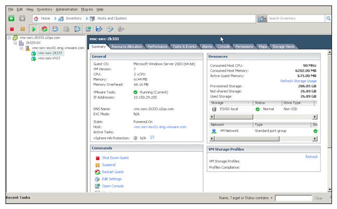
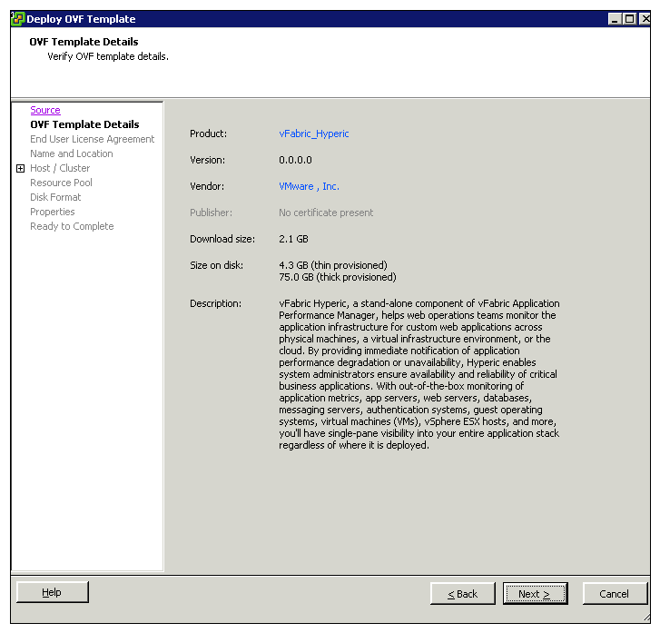
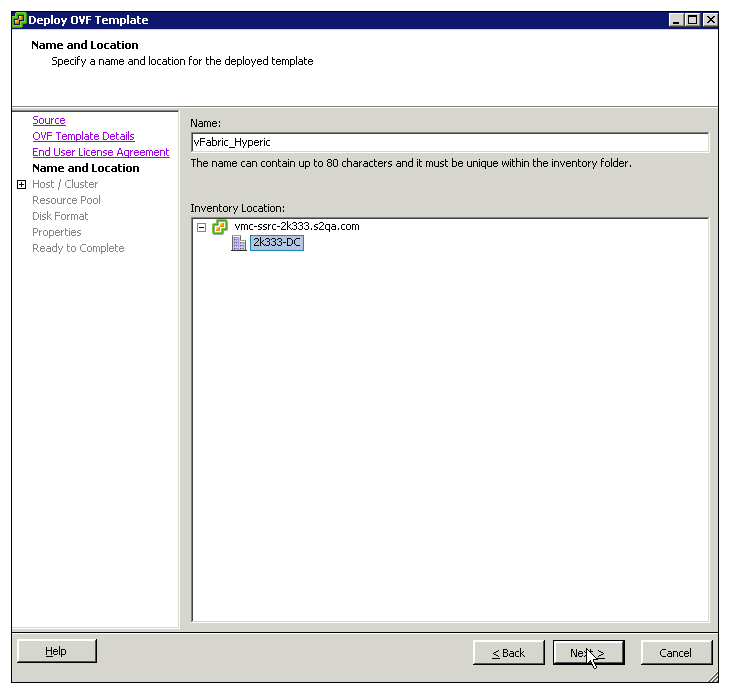
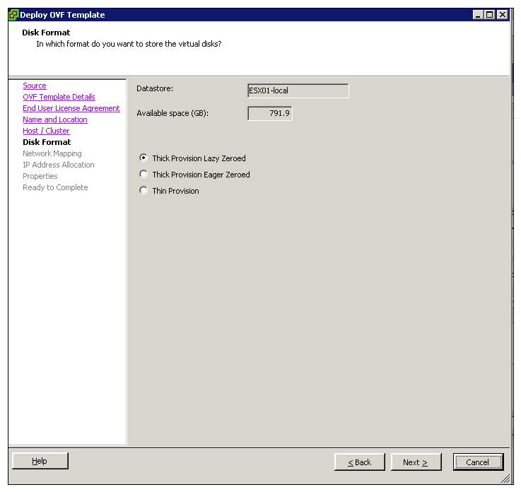
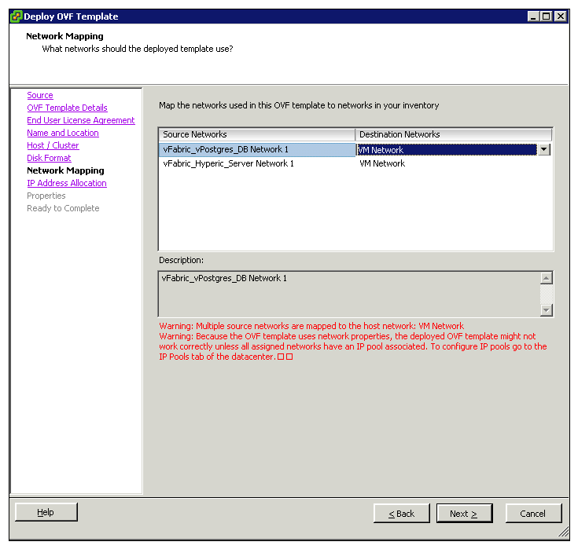
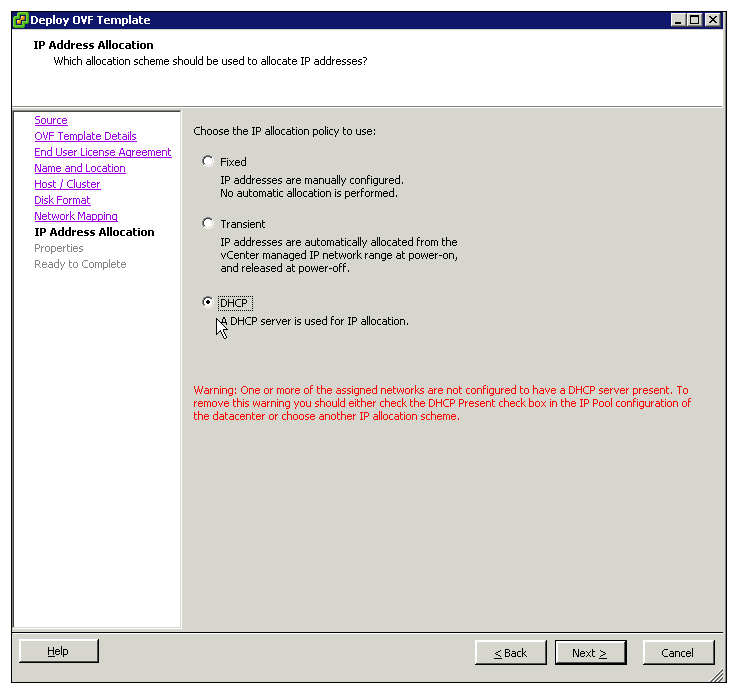

About this page...
This page has instructions for deploying the Hyperic Virtual Appliance (vApp). After deploying the vApp, proceed with "Step 4 - Set Up the Hyperic Agent" of the Hyperic Installation and Startup Process.
For information about using the regular Hyperic installer, rather than deploying the vApp, see Run Hyperic Installer.
If you wish to upgrade an existing Hyperic deployment, please see Hyperic Upgrade Processes.
installing the
About the Hyperic vApp
A virtual appliance (vApp) is one or more virtual machine image files (.ovf), each with a preconfigured operating system environment and application. The Hyperic vApp contains two VM images, one for the Hyperic Server and one for the Hyperic database. Deploying the Hyperic vApp offers these advantages over traditional installation:
- Greatly simplified deployment, because the components are already configured to work, and to work with each other.
- Reduced support impacts and risks because the components are self-contained and hence unable to interact, undesirably or otherwise, with other applications.
Prerequisites
The prerequisites for this procedures are:
- vCenter is installed and running.
- vSphere Client is installed.
- If you intended to assign fixed IP addresses to the Hyperic Server and Hyperic database, which is the recommended best practice, be prepared to supply those IP addresses when you run the deployment wizard.
Procedure
- Log in to the vSphere Client as Administrator.
 - Select File > Deploy OVF Template.
- On the "Source" page, enter a URL from which to download the Hyperic OVF file, or a disk location accessible from your computer.

- On the "OVF Template Details" page, click Next to proceed.
 - On the "End User License Agreements" page, click Next to proceed.
- (Optional) On the "Name and Location" page, edit the name and select the folder location within the inventory where the vApp will reside, and click Next.
 - On the "Host/Cluster"page, select the host or cluster on which you want to deploy the OVF template, and click Next.

- On the "Disk Format" page, welect the disk format to store the virtual machine virtual disks, and click Next.
- Thick Provision Lazy Zeroed — Creates a virtual disk in a default thick format. Space required for the virtual disk is allocated when the virtual disk is created. Data remaining on the physical device is not erased during creation, but is zeroed out on demand at a later time on first write from the virtual machine. Using the default flat virtual disk format does not zero out or eliminate the possibility of recovering deleted files or restoring old data that might be present on this allocated space. You cannot convert a flat disk to a thin disk.
- Thick Provision Eager Zeroed — A type of thick virtual disk that supports clustering features such as Fault Tolerance. Space required for the virtual disk is allocated at creation time. In contrast to the flat format, the data remaining on the physical device is zeroed out when the virtual disk is created. It might take much longer to create disks in this format than to create other types of disks.
- Thin Provision — Use this format to save storage space. For the thin disk, you provision as much datastore space as the disk would require based on the value that you enter for the disk size. However, the thin disk starts small and at first, uses only as much datastore space as the disk needs for its initial operations. f the thin disk needs more space later, it can grow to its maximum capacity and occupy the entire datastore space provisioned to it. Also, you can manually convert the thin disk into a thick disk.

- On the "Network Mapping" page, select a network by right-clicking the Destination Network column in your infrastructure to set up the network mapping.
 - On the "IP Address Allocation" page, you can choose one of:
- Fixed — May be preferable for production environments. You will be prompted to enter the IP addresses in the Appliance Properties page.
- Transient — IP addresses are allocated from a specified range when the appliance is powered on. The IP addresses are released when the appliance is powered off.
- DHCP — A DHCP server is used to allocate the IP addresses

- On the "Properties" page, enter values in the following fields and click Next to proceed:
- DB username
- DB password
- Hyperic admin username
- Hyperic admin password

- On the "Ready to Complete" page:
- Review the options you have selected on the "Ready to Complete" page.
- If you want the Hyperic Server started when deployment is complete, check the Power on after deployment box.
- Click Finish to proceed.

- The Deploying vFabric Hyperic appears.
Logon to vApp
Use root user to logon to the vApp machines — both Hyperic Server and Hyperic database. Supply the password that was defined during deployment for the Hyperic Server admin account, hqadmin by default.
Start and Stop Hyperic Server
Use the "hyperic" user to start, stop, and restart the Hyperic Server.